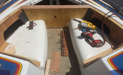
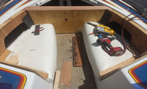

Welcome to Upholstery works
Hot rods are typically American cars with large engines modified for linear speed. The term became commonplace in the 1930s or 1940s as the name of a car that had been "hopped up" by modifying the engine in various ways to achieve higher performance. A term that was common in the early days to refer to a hot rod was a "gow job". This has fallen into total disuse except with The term can also apply to other items that are "souped up" for a particular purpose, such as "hot-rodded
Little Of History
Hot rods are typically American cars with large engines modified for linear speed. One explanation is that the term is a contraction of "hot roadster," modified for speed.

Black Hot Rods
Hot rods are typically American cars with large engines modified for linear speed. One explanation is that the term is a contraction of "hot roadster," modified for speed...

Nice Porsche
The headquarters and main factory are located in Zuffenhausen, a district in Stuttgart, but the Cayenne and Panamera models are manufactured in Leipzig, Germany, .
Black Leather Motor Cycle Seat

lack Leather Motorcycle seat with gray thread.In the 21st century, the motorcycle industry is mainly dominated by Japanese companies. In addition to the large capacity motorcycles, there is a large market in smaller capacity (less than 300 cc) motorcycles, mostly concentrated in Asian and African countries.During the First World War, motorbike production was greatly ramped up for the war effort to supply effective communications with front line troops.
Messengers on horses were replaced with despatch riders on motorcycles carrying messages, performing reconnaissance personnel and acting as a military police. American company Harley-Davidson was devoting over 50% of its factory output toward military contract by the end of the war.
We Do All this and More in are Place
 

For Additional Information
Please Cal Is In Process